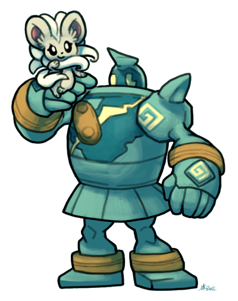

A strong understanding of teambuilding is by far the most important skill required in a Pokemon player. However it is an art that is not quite intuitive, requiring continuous practice and forging to take to an excellent level. This guide will teach you about the foundations of any successful team, starting with...
Synergy
"The interaction or cooperation of two or more organizations, substances, or other agents to produce a combined effect greater than the sum of their separate effects."
Simply put, synergy is how well two or more Pokemon work together. This is the most essential part of teambuilding, as it separates a well-made team from one consisting of random Pokemon. Teams that lack synergy are prone to having most or all of their team swept or walled by certain Pokemon, as they lack the necessary checks and counters to these threats. On the other hand, having good synergy allows your team to sweep or wall any opposing team with ease.
Synergy through typing: Synergy through typing is when two or more Pokemon are mutually resistant or immune to the other's weaknesses. This synergy is often observed in defensive backbones for a team.
Synergy through checks/counters: Instead of each Pokemon covering the other's weaknesses through its typing, check/counter synergy involves two Pokemon that work well together because each can remove the other's specific checks and counters. This type of synergy aims to give let each Pokemon give its teammate an easier time fulfilling its role, whether it's walling or sweeping, by removing the Pokemon that stop it from doing so.
Here is a core that demonstrates both type and check synergy:
Thanks to levitate, Rotom-W has a sole weakness to grass type attacks. Dragalge quad resists grass and can get free adaptability-boosted hits off while appreciating rotom's ability to pivot easily. The ground immunity and ability to check most steels is also a plus from Rotom to ease Dragalge's weakness to ground types.
Cores
Cores are the crystallization of two or more Pokemon sharing synergy as explained above. They're especially potent and easily draw out the strengths of your pokemon, offensively and defensively. Click on any of the common recurring type cores for more information and some samples too:
Fire/Water/Grass
A very beginner-friendly, intuitive, forgiving, flexible, but potent type core. FWG cores can built in a ton of different ways and can fit on near all playstyles, from fast offense to semi-stall. They provide a ton of key resistances to common attacking types and all cover each other well in terms of weaknesses. They often form the defensive basis of your team, but can go on the offensive too.
Heatran/Fini/Venusaur-Mega is an example of a bulky FWG core and these make for a great basis of a team.
Darmanitan/Rotom-W/Whimsicott is an example of how a FWG core can be built offensively, such as in a volt-turn playstyle.
Fighting/Psychic/Dark
FPD cores are harder to work with but are very offensively inclined, as the triple type combo can cover each other’s offensive resists properly. It usually functions by having the dark type beat down or pursuit trap ghost/psychics for the psychic type and fighting type in the core to function freely.
An infamous ORAS duo and the posterboy FPD core, Gallade-Sharp consists of Bisharp freely setting up on or trapping Gallade’s sparse checks such as Latios and Sableye-M, while Gallade-M can break the rest of the entire metagame very effectively.
Fairy/Dragon/Steel
FDS cores are a rather forgiving and tend to be very effective, though they are somewhat harder to build than other cores because of the explosive nature of dragon types in competitive play. The types cover each other well and have elements of offense and defense simultaneously.
Dragons + Magnezone was a common archetype in Gen 5, thriving off of attackers with similar checks abusing Magnezone’s ability to remove key threats for free. Gardevoir-M adds a fairy to the core while still sharing checks with Hydreigon. The three can take key hits from the opposition for each other and retaliate hard, as expected of an FDS core.
Water/Grass/Ground
Typically a defensive core, WGG cores give a ton of crucial resistances and immunities to very threatening types. They are amazing on near all archetypes and are very versatile. These cores tend to fill out a lot of checkboxes in the utility section, such as hazard setters and removers.
Empoleon, Rotom-Mow, and Donphan together are a bulky offensive core that provides key resistances to a ton of threatening offensive types, while providing two hazard setters and three hazard removers.
Fairy/Dark
A very dangerous and surprisingly underutilized offensive type core, fairy/dark together hit almost the entire game for neutral damage or better. This type duo tends to be frail, but the common offensive partners that abuse this typing are some of the most threatening breakers in the game.
Azumarill and Krookodile make for some savage offensive type synergy, covering each other’s checks or just straight up destroying similar switch-ins until they crumble. While they may seem to share a grass weakness, Azumarill can use a sap sipper set to wall many grass types.
Fire/Dragon
The premise behind this powerful offensive type core is simple: dragons struggle with ice, steel, and fairy types. Fire types incinerate and/or resist those, while appreciating dragons resisting water type attacks that target fire types.
Infernape often lures in water types and can pivot out to Latios, which can break down bulky waters nicely. In exchange, Latios appreciates Infernape’s ability to shred through steel types that may give Latios some trouble. Interestingly, it fills out most of a FPD core as well.
Conclusion
Hopefully after reading this guide, you have gained some knowledge on how to effectively teambuild and just what makes a powerful foundation for any competitive team worth its weight. With the large breadth of knowledge, huge depth of creativity, and a decent amount of elbow grease... you too can become a top-class teambuilder. Take things one core at a time, and you'll immediately see improvement!